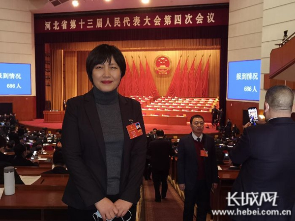

长城网：两会现场连线｜檀会芳代表：进一步加大地下水超采综合治理力度
2021-03-04 05:41
长城网 2021-02-19

檀会芳代表
长城网讯（记者 王林红）河北省是水资源严重短缺的省份，为解决地下水超采问题，河北省委、省政府从2014年开始，采取“节”“引”“调”“蓄”“管”等措施，扎实开展地下水超采综合治理工作，尤其是2020年，河北省将地下水超采综合治理工作列为重点推动工作，有力推动了河北省地下水超采治理工作的开展。
2月19日，针对河北省地下水超采综合治理工作，河北省人大代表、邢台正大会计师事务所主任会计师檀会芳建议，进一步提高对地下水超采综合治理工作的重视，并将地下水超采综合治理工作纳入河北省各级政府的重要考核指标，进一步提高各级政府对地下水超采综合治理工作的重视程度。
檀会芳代表表示，应进一步加大关闭自备井的力度。对于未关停的城镇自备井，从深层次分析原因，对症下药，从根子上解决问题，确保城镇自备井应关尽关；对于农村饮用水和灌溉用的机井，要因地制宜研究解决办法，适时采取江水置换、种植结构调整等措施，有序引导，有序关停。同时，进一步推进引调水、生态补水等工作。通过引调长江水、黄河水，并调度本地水库水源实施生态补水等，补充本地地表水水源，减少地下水开采量。
檀会芳代表建议，对地下水超采综合治理项目开展绩效评价，确保资金使用效果。一是在地下水超采综合治理项目申报时，及时组织有关部门或委托第三方对项目的必要性、合理性、经济性等进行评估；二是对己实施的地下水超采综合治理进行绩效评价工作，对项目资金的使用和效果进行客观评价，对于在绩效评价中发现资金使用效果较差、未达到预期使用效果的，要视情况予以问责，确保资金充分发挥效益。
原文链接：
https://jiyun.hebyun.com.cn/pages/2021/02/19/f58d38c1d06044338e48eeca8ed311e0.html
 京公网安备 11010802022122号
京公网安备 11010802022122号